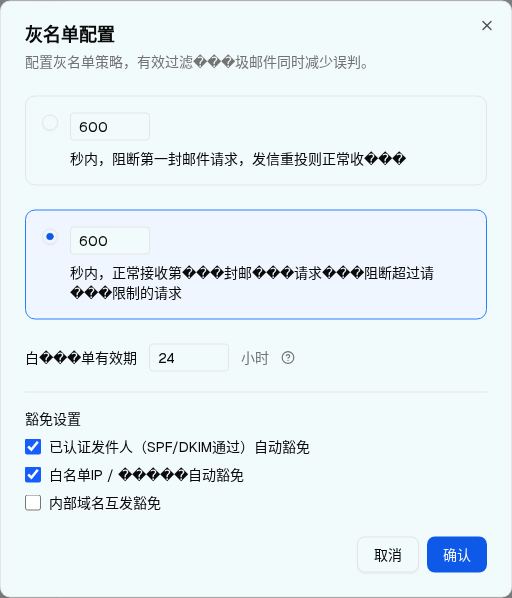

交互层级 4：灰名单配置 Dialog（频率限制模式）
| 所属组件 | 3.1 灰名单配置 Dialog |
| 主文件 | filter-rules-pipeline-rbl-filter/index.html |
| demo 源 | connection-layer-page.tsx L2337–2358（模式 2 分支） |
| 触发路径 | 层级 3 Dialog → 点击第 2 行（或其 RadioGroupItem）→ setGreylistDraft(prev => ({...prev, mode:"rateLimit"})) |
| DOM 节点数 | 47（与层级 3 相同——指示器 3 节点在两个 radio 之间移动） |
1. 该层级 UI 全貌


⚠ 本层级暴露的核心缺陷：maxRequests 无输入控件
spec §2「灰名单配置对话框」字段表明确列出「最大请求数 / 数字输入 / 频率模式：窗口内最大请求数」。但浏览器实测该 Dialog 全程只有 3 个 input[type=number]（delaySeconds、windowSeconds、whitelistTTL）。greylistMaxRequests 有 useState("5")、进了 greylistDraft、被 confirm 回写、并被摘要文案 greylistModeSummaryRate（「{seconds}秒内最多{max}次」）引用——唯独没有任何 UI 能修改它。落地时必须补齐（主文件 §10 Q2）。
2. 可交互组件预览
↓ 可操作预览（初始即 mode = "rateLimit"）：点第 1 行可切回层级 3；编辑窗口秒数 / TTL；勾选豁免项；「确认」后下方入口卡镜像的摘要会实时更新——可直观看到 {max} 永远是 5。
灰名单配置
配置灰名单策略，有效过滤���圾邮件同时减少误判。
mode = "delay" → 这就是 层级 3 · 延迟接收模式 →↓ 层级 2 入口卡镜像（点「确认」后摘要联动）
灰名单配置
延迟接收：600秒内阻断首次请求
3. UI 元素清单（本层新增 / 变化的元素）
| # | 元素 | 层级 3（delay） | 层级 4（rateLimit） | 说明 |
|---|---|---|---|---|
| 1 | 延迟接收行 | data-state="checked"；border blue-500 + bg blue-50；高 90px | data-state="unchecked"；border 默认；透明底；高 110px（文案换行更多） | 整行 onClick 切换 |
| 2 | 频率限制行 | unchecked，高 110px | checked，border blue-500 + bg blue-50，高 90px | — |
| 3 | radio 指示器 | 在 #greylist-delay 内（span > svg > circle） | 移动到 #greylist-rate 内 | Radix 卸载/挂载，总节点数恒 47 |
| 4 | aria-checked | delay=true / rate=false | delay=false / rate=true | 无障碍语义正确 |
| 5 | 窗口秒数输入 | 存在但所在行未选中，仍可编辑 | 存在且行选中 | demo 不禁用未选中模式的输入框（spec §3 说「动态显示对应参数表单」，实测两行输入始终都在） |
| 6 | 最大请求数 | 两层都不存在 | 见上方缺陷框 / 主文件 D2 | |
| 7 | 白名单有效期 / 豁免设置 / 页脚 | 两层完全相同（不随模式变化） | — | |
| 8 | 入口卡摘要（确认后） | 「延迟接收：{delaySeconds}秒内阻断首次请求」 | 「频率限制：{windowSeconds}秒内最多{maxRequests}次」→ 实测「600秒内最多5次」 | {max} 恒为 5 |
4. DOM 树比对结果
提取的 HTML vs demo 实际 DOM（[data-spec='greylist-dialog']，mode = rateLimit）
| 比对项 | demo 实际 DOM | 预览 HTML | 一致 |
|---|---|---|---|
| 节点总数 | 47（与层级 3 相同） | 47（同层级 3；指示器常驻，见下） | ✅ |
| radio #greylist-delay | aria-checked="false" data-state="unchecked"，childNodes = 0 | aria-checked="false" data-state="unchecked"，指示器 display:none | ✅（语义一致） |
| radio #greylist-rate | aria-checked="true" data-state="checked"，childNodes = 1（span > svg > circle） | aria-checked="true" data-state="checked"，指示器可见 | ✅ |
| number 输入个数与值 | 3 个：600(min=10)、600(min=10)、24(min=1) —— 与 delay 模式完全一致 | 3 个，同值同 min | ✅ |
| 是否新增 maxRequests 输入 | 否——切到 rateLimit 后 DOM 无任何新增 input | 未包含 | ✅ |
| checkbox 个数与初值 | 3 个：true, true, false（不随模式变化） | 同 | ✅ |
| 是否禁用未选中行的输入 | 否——#delaySeconds 无 disabled 属性，仍可编辑 | 同（未加 disabled） | ✅ |
确认后入口卡 innerText | "灰名单配置 | 频率限制：600秒内最多5次 | 点���配置" | 入口卡镜像点「确认」后渲染同一字符串 | ✅ |
| 页脚按钮 | "取消" / "确认" | 同 | ✅ |
差异说明（同层级 3）：Radix RadioGroup 在切模式时卸载 / 挂载指示器子树，故 demo 节点数恒 47；预览让指示器常驻并用 display 控制显隐，静态节点数比 demo 多 3。data-state / aria-checked / 可见 DOM 完全一致，属刻意的实现简化。
截图修正记录：首次抓 10-greylist-dialog-rate.png 时，上一步 hover HelpCircle 残留的 Tooltip 浮层压在第 2 行文案上。已将鼠标移至 (5,5) 后重新截图，当前图无浮层遮挡。